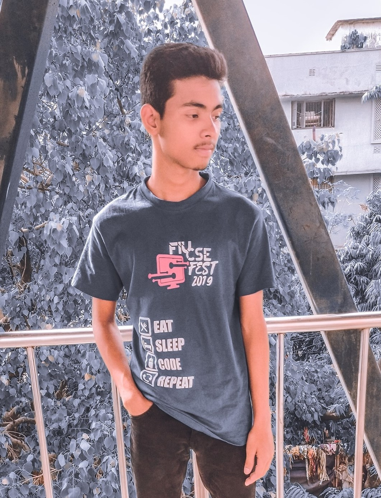

Limon Hossain((ليمون حسين))



The Reasoning
A self learned professional web developer with more than 1 Years of experience in wide area. Started playing around with Adobe Photoshop since 2009. Good experience in web development, even using vanilla javascript. Delivered couple of projects developed in Vue js, React js, Jquery, PHP. Also good with Adobe illustrator, premier pro, after effects, lightroom and XD.
Learn MoreThe Knowledge
A self learned professional web developer with more than 1 Years of experience in wide area. Started playing around with Adobe Photoshop since 2009. Good experience in web development, even using vanilla javascript. Delivered couple of projects developed in Vue js, React js, Jquery, PHP. Also good with Adobe illustrator, premier pro, after effects, lightroom and XD.
Learn MoreThe Integration
A self learned professional web developer with more than 1 Years of experience in wide area. Started playing around with Adobe Photoshop since 2009. Good experience in web development, even using vanilla javascript. Delivered couple of projects developed in Vue js, React js, Jquery, PHP. Also good with Adobe illustrator, premier pro, after effects, lightroom and XD.
Learn More